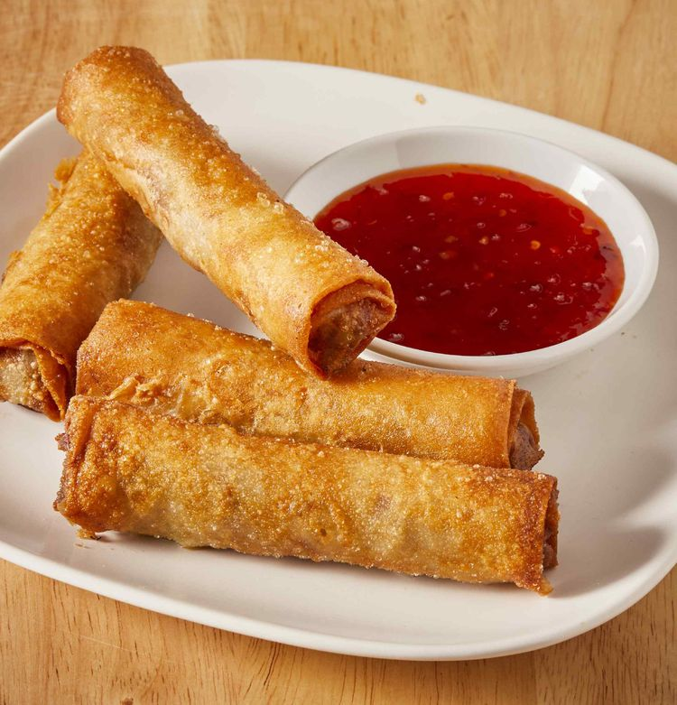

Lumpia
Home
Champorado
Lasagna

Description
Lumpia are various types of spring rolls commonly found in Indonesian and Filipino cuisines.
Lumpia are made of thin paper-like or crêpe-like pastry skin called "lumpia wrapper" enveloping savory or sweet fillings.
Ingredients
- 1 (12 ounce) package lumpia wrappers
- 1 pound ground beef
- 1 pound ground chicken
- 1/3 cup finely chopped onion
- 1/3 finely chopped green bell pepper
- 1/3 cup finely chopped carrot
- 1 quart oil for frying
Steps
- Thaw lumpia wrappers if frozen.
Lay several wrappers on a clean,
dry surface and cover with a damp towel to prevent wrappers from drying out.
- Mix beef, chicken, onion, green pepper, and carrot together in a medium bowl.
Place about 2 tablespoons of meat mixture along center of wrapper.
Do not overstuff wrappers or they will burn before meat is cooked. Fold one edge of wrapper over filling.
Fold outer edges in slightly, then roll into a closed cylinder. Wet finger with water and moisten outer edge to seal.
Repeat with remaining wrappers and filling, keeping finished lumpia covered to prevent drying.
- Heat oil in a 9-inch skillet on medium to medium-high heat until oil reaches 170 to 175 degrees C.
Fry 3 to 4 lumpia at a time, turning in oil until nicely browned, about 2 to 3 minutes per side. Drain on paper towels.
- Cut each lumpia into thirds for parties, and serve with banana ketchup, if you like.